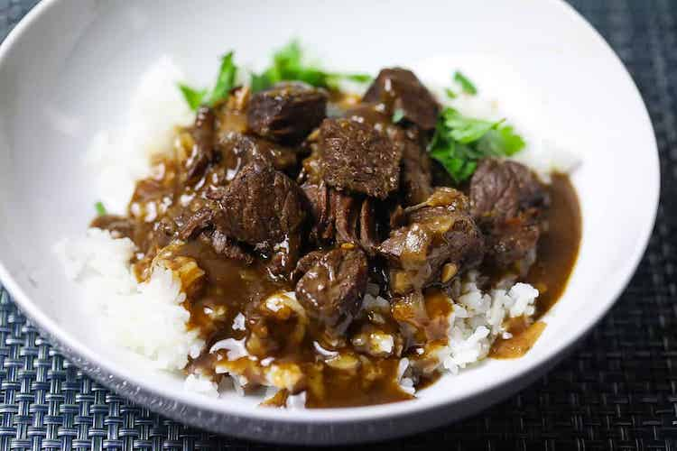
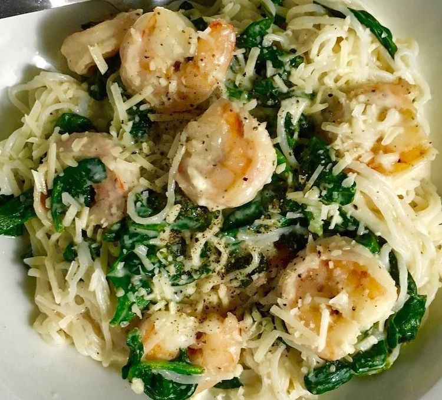

Ingredients
Directions
Mix beef broth, mushroom soup with roasted garlic, chopped onion, and sliced onion together in a slow cooker until thoroughly combined; place the beef rump roast into the soup mixture, cover the cooker, and cook on Low until beef is very tender, at least 7 hours.
One hour before serving time, remove the roast from the cooker and cut into bite-size pieces; remove and strain 2 cups of beef broth and set aside. Return beef pieces to the slow cooker.
Melt butter in a heavy skillet over medium heat and stir in flour to make a paste. Reduce heat to low and cook and stir the flour mixture until it bubbles and turns golden brown, about 15 minutes. Watch carefully because the mixture burns easily. Whisk about 1/4 cup of the reserved beef broth into flour mixture at a time and bring gravy to a simmer.
To serve, spoon brown rice onto serving plates and top with beef pieces; pour gravy over beef.
Ingredients
Directions
In a saucepan over low-temperature, heat the Alfredo sauce. Bring a large pot of lightly salted water to a boil. Add pasta and cook for 8 minutes or until al dente; drain.
Boil shrimp in a large pot of water until they turn orange. Then place in bowl with melted butter. Let shrimp marinate for 15 to 30 minutes; remove. In a large skillet over medium heat, saute the green pepper and onion in a small amount of oil.
Mix together the cooked pasta, shrimp, pepper-onion mixture and Alfredo sauce. Season with garlic powder and cumin.